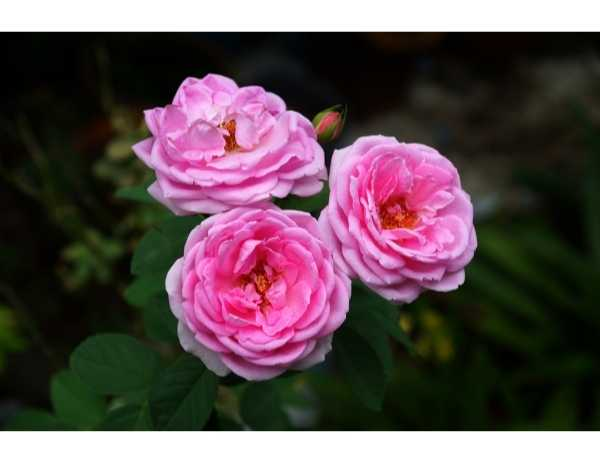

Rosa damascena
Common Names: Paneer Rose, Damask Rose, Rose of Castile
Local Name: Paneer Roja (Tamil), Gulab (Hindi)
Family: Rosaceae
Origin: Middle East (Syria/Iran); widely cultivated in India
Plant Type: Perennial deciduous shrub
Variety: Damask rose — highly fragrant, multi-petaled
Average Lifespan: 15–25 years with proper care
| Growth Habit | Upright to spreading thorny shrub |
| Plant Size | 1.5–2.5 meters tall |
| Leaves | Pinnately compound, 5–7 leaflets, serrated margins, medium green |
| Flowers | Double-petaled, 6–8 cm diameter, 30+ petals per bloom |
| Flower Characteristics | Intensely fragrant, pink to light pink; blooms in clusters |
| Fruit | Rose hips (small, red, oval) — not the primary harvest |
| Fruit Color | Red-orange when mature |
| Seed Characteristics | Small achenes inside rose hips |
| Root System | Fibrous with some deeper anchoring roots |
| Climate | Subtropical to temperate; tolerates heat well |
| Temperature Range | 15–30°C ideal; tolerates up to 40°C |
| Rainfall Requirement | 600–1000 mm annually; avoid waterlogging |
| Soil Type | Well-drained loamy soil rich in organic matter |
| Soil pH Preference | 6.0–6.5 |
| Sun Requirement | Full sun (6+ hours daily); morning sun preferred |
| Spacing | 1–1.5 meters between plants |
| Irrigation Method | Drip irrigation or basin irrigation; avoid wetting foliage |
| Water Requirement | Moderate; consistent moisture but not waterlogged |
| Can it Grow in Pots? | Yes, in 15–20 liter pots with good drainage |
| Fertilizer Schedule | Monthly during growing season; reduce in dormancy |
| Recommended Organic Fertilizers | Well-rotted cow dung, vermicompost, bone meal, neem cake |
| Pesticide Frequency | Bi-weekly monitoring; spray as needed |
| Recommended Organic Pesticides | Neem oil, soap spray, garlic extract |
| Mulching Practice | Organic mulch (coconut coir, dried leaves) around base |
| Training System | Open vase shape for air circulation |
| Pruning Time | October–November (India); after dormancy period |
| How to Prune | Hard prune to 30–45 cm; remove dead wood, thin center for airflow |
| Common Pests | Aphids, thrips, red spider mites, rose chafer beetle |
| Common Diseases | Black spot, powdery mildew, rust, dieback |
| Disease Prevention & Remedies | Good air circulation, avoid overhead watering, fungicidal sprays, remove infected parts |
| Flowering Months | November–March (main season in South India); can bloom year-round |
| Fruiting Season | Rose hips form after flowering if not deadheaded |
| Days to Harvest | Flowers harvested early morning when half-open for maximum fragrance |
| Harvest Indicators | Petals just beginning to open; strong fragrance |
| Average Yield per Plant | 1–2 kg of flowers per plant per season |
| Pollination Type | Self-pollination and insect pollination |
| Pollination Notes | Bees are primary pollinators; flowers attract many beneficial insects |
| Pollination Details | Self-fertile but cross-pollination improves hip production |
| Propagation by Seeds | Possible but slow and variable; not recommended for named varieties |
| Propagation by Cuttings | Semi-hardwood cuttings (15–20 cm) in monsoon season; root in 4–6 weeks |
| Propagation by Grafting | T-budding on Rosa indica rootstock for commercial production |
| Water Usage | Moderate; efficient with drip irrigation |
| Soil Conservation Practices | Dense root system holds soil; mulching prevents erosion |
| Organic Practices Used | Panchagavya, jeevamrutha, composting rose prunings |
| Companion Plants | Lavender, marigold, garlic (pest deterrent) |
| Biodiversity Benefits | Attracts bees, butterflies; provides habitat for beneficial insects |
| Commercial Production Regions | Kannauj (UP), Pushkar (Rajasthan), Tamil Nadu, Karnataka |
| Market Uses | Rose water, rose oil (attar), garlands, religious offerings |
| Processing Uses | Rose water, gulkand, rose oil, rose petal jam, cosmetics |
| Market Value (Approx.) | ₹200–500 per kg of flowers; rose oil is extremely valuable |
| Symbolism | Symbol of love, beauty, and devotion in Indian culture |
| Traditional Uses | Rose water in religious ceremonies, cooking, and Ayurvedic medicine; garlands for worship |
| Calories | Minimal (petals used in small quantities) |
| Dietary Fiber | Present in rose hips |
| Vitamin C | Rose hips are extremely rich in Vitamin C (426 mg per 100g) |
| Vitamin A | Present in rose hips |
| Iron | Trace amounts in petals |
| Potassium | Present in rose hips |
| Antioxidants | Rich in polyphenols, flavonoids, anthocyanins |
| Other Key Nutrients | Essential oils (citronellol, geraniol, nerol) |
| Anxiety & Sleep | Rose water and rose oil used in aromatherapy for calming effects |
| Immune Support | Rose hip tea rich in Vitamin C supports immunity |
| Anti-inflammatory Properties | Rose water soothes skin inflammation; used in eye washes |
| Heart Health | Gulkand (rose petal preserve) used in Ayurveda for cooling and heart health |
| Digestive Health | Gulkand aids digestion, reduces acidity and bloating |
Disclaimer: Information provided is for educational purposes only and not a substitute for medical advice.
Add your field observations here.